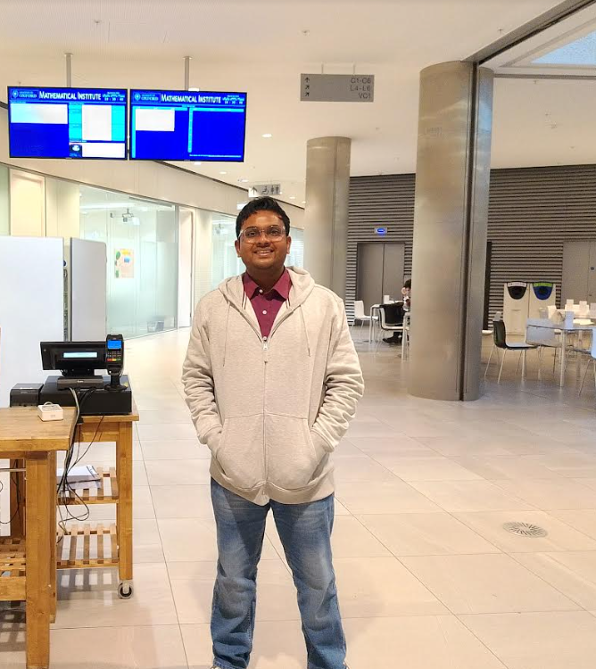
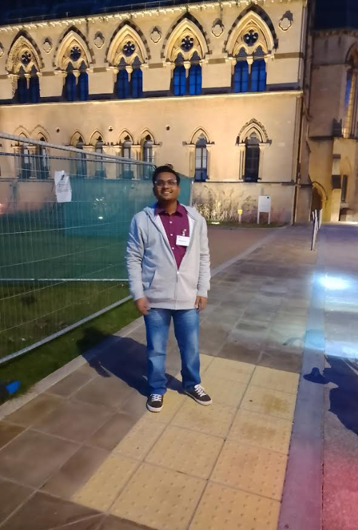
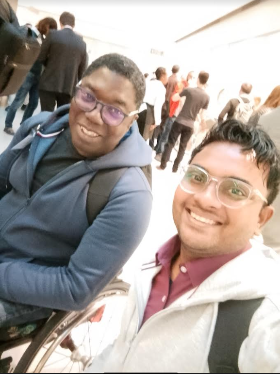
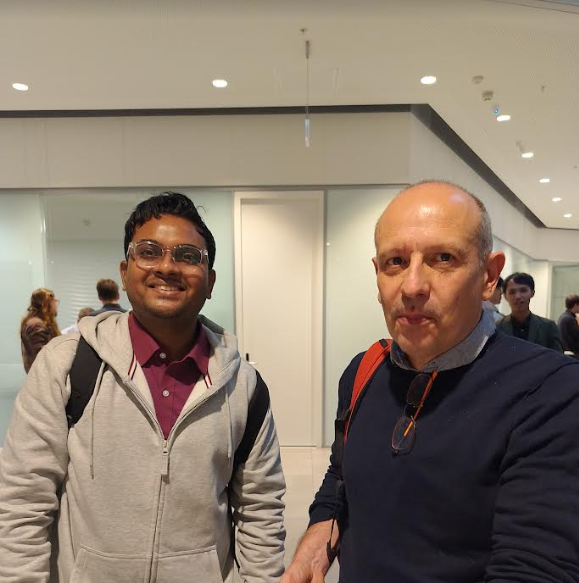

About the Oxford Conference
I was honored to attend a prestigious research conference at the Mathematical Institute, University of Oxford. This event brought together some of the brightest minds from institutions worldwide, including Oxford, MIT, Cambridge, and King's College London. It was an extraordinary experience that broadened my knowledge and allowed me to engage with groundbreaking research in mathematics and its applications. I'm deeply grateful to the Mathematical Institute, University of Oxford, for hosting such a transformative event.
Networking and Academic Exchange with Leading Scholars
The conference provided a unique platform to engage with professors, researchers, and students from top-tier universities. I participated in several in-depth discussions on various mathematical topics, ranging from theoretical advancements to real-world applications. Engaging with scholars from around the world allowed me to gain fresh perspectives and broaden my academic horizons.
One of the highlights was the opportunity to connect with professors who shared insights on recent research trends and methodologies. Conversations with these accomplished individuals provided invaluable guidance, and their enthusiasm for mathematics and research was truly inspiring. They encouraged a collaborative spirit, emphasizing the importance of interdisciplinary research to address global challenges.
Key Sessions and Learning Experiences
The conference featured a series of keynote presentations and workshops, each focusing on different aspects of mathematics and data science. Here are a few sessions that had a significant impact on me:
- Advanced Theoretical Models: In one of the sessions, I learned about new mathematical models that are paving the way for innovations in fields such as physics, engineering, and even climate science. The discussion highlighted how these models are used to understand complex systems, predict behaviors, and optimize outcomes in various industries.
- Data Science Applications: Another session focused on how mathematics is driving advancements in data science and artificial intelligence. This workshop demonstrated how machine learning algorithms, data-driven predictions, and statistical analysis are transforming industries from healthcare to finance.
- Collaborative Research Projects: I also attended a session on collaborative research, which showcased projects where mathematicians and scientists are working together across disciplines. The emphasis on cross-institutional partnerships underscored the potential for transformative discoveries when experts from different fields come together.
Memorable Moments and Reflections

Arriving at the Mathematical Institute, University of Oxford, filled me with excitement and anticipation. The atmosphere was vibrant, with researchers and professors actively engaging in discussions and sharing their work, creating an inspiring environment for learning and collaboration.

Oxford's campus is rich with history, boasting architectural marvels that inspire awe. During a break, I explored the campus and marveled at its iconic structures that blend the legacy of the past with the vibrancy of modern research.

Engaging in discussions with researchers and professors from world-renowned universities allowed me to explore data-driven methodologies and exchange ideas on the future of mathematics and data science. These conversations were intellectually stimulating and provided a global perspective on current research.

One of the most memorable moments was connecting with top professors who provided practical advice on refining my research skills. This interaction deepened my understanding and motivated me to continue my research journey with renewed enthusiasm.
Inspiring Takeaways and Future Directions
Attending this conference has inspired me to pursue new directions in my research. Here are some of the key takeaways that will influence my future academic and professional journey:
- Embracing Innovation: The importance of embracing innovative approaches in research was a recurring theme. From theoretical models to practical applications, the conference emphasized that mathematics is constantly evolving and adapting to address contemporary challenges.
- The Value of Collaboration: The event underscored the value of interdisciplinary collaboration. Working with experts from diverse fields can lead to groundbreaking solutions, which is especially crucial in today's complex, interconnected world.
- Networking with Scholars: Networking with fellow attendees allowed me to exchange ideas and forge connections with future collaborators. Building relationships with scholars from around the world has opened up exciting possibilities for joint research projects and continued learning.
Conclusion
This conference provided a profound opportunity to delve deeper into my studies and expand my understanding of mathematics. I'm grateful for this experience and look forward to applying what I have learned in my future work.